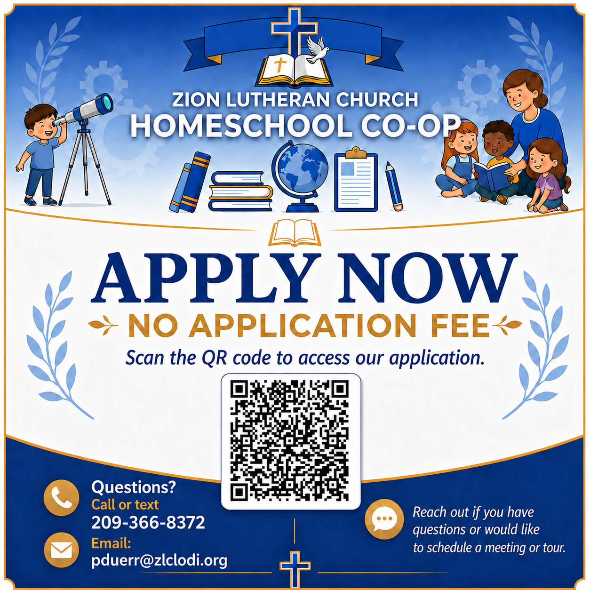

Classes & Shared Learning
Group learning opportunities, academic support, and enrichment that complement home education.
Lodi, California
A Christ-centered homeschool support program coming alongside families with shared learning, parent partnership, classes, and faithful encouragement.
For families who want the freedom and responsibility of homeschooling, but not the isolation of doing it alone.
Who We Are
Zion Lutheran Homeschool Co-op is a Christ-centered homeschool support program connected to Zion Lutheran Church. We provide community, classes, encouragement, and shared learning opportunities while honoring parents as the primary educators of their children.
We are not an umbrella school, independent school, or replacement for each family's legal homeschool responsibilities. We exist to strengthen the work families are already doing at home.
How We Support Families
We provide more than a place to take classes. We offer a community where students can build friendships, parents can find encouragement, and families can work together in the shared task of Christian education.
Group learning opportunities, academic support, and enrichment that complement home education.
Flexible offerings that may include creative, practical, academic, and social experiences.
A regular place for students to build friendships and families to form meaningful relationships.
Support, communication, and shared responsibility so homeschooling feels more sustainable.
Faith & Values
Our co-op teaches and operates in accordance with Holy Scripture and the faithful doctrinal confession of the Church, as upheld by the Lutheran Church-Missouri Synod.
Christ shapes our learning, relationships, service, discipline, and purpose.
We support, encourage, and equip families in the calling God has given parents.
Families learn together, encourage one another, and share the work of community.
We pursue thoughtful teaching, organization, communication, and care.
We aim to equip every child and parent to proclaim what they believe, and why they believe it.
Parent Partnership
Zion Lutheran Homeschool Co-op is built on families serving, learning, and growing together. Families contribute through regular volunteer service, helping create a safe, welcoming, and well-supported environment for all students.
Each family serves either 1 hour per week or 5 hours per month.
Enrollment
Enrollment begins with an application and family interview. After acceptance, families complete registration paperwork, submit the non-refundable registration fee, and agree to the co-op's statement of faith, code of conduct, safety policies, and participation expectations.

Families should be prepared to review the Statement of Faith, Code of Conduct, liability waiver, photo/media release, homeschool support program acknowledgement, background check requirements, and volunteer expectations.
Questions Families Ask
No. Zion Lutheran Homeschool Co-op is a homeschool support program. Families remain responsible for complying with California homeschool requirements, including filings, records, curriculum decisions, and legal obligations that apply to their homeschool.
The co-op is built around parent partnership. Parents remain actively involved through service, communication, and shared responsibility.
Participating families are asked to review and acknowledge the co-op's faith commitments as part of the enrollment process.
Families using charter school funds should check directly with their charter school regarding what, if any, secular services may be eligible. Religious programming, chapel, Bible instruction, catechism, and co-op membership should not be presented as charter-funded services.
Contact
Reach out to learn more or schedule a meeting or tour.